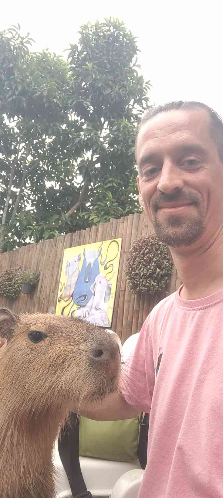

DOMI · MIND BEHIND CAPYTAROT
Ich bin Domi, Ende 30 – seit rund 20 Jahren zwischen Magie, Bühne und Forschung unterwegs.
Ich arbeite als Medium, Zauberer und Schausteller – aber genauso als Physiker, Bewusstseinsforscher und praktischer Okkultist. Für mich sind das keine Gegensätze, sondern verschiedene Sprachen für dieselbe Sache: Muster erkennen, Realität lesen, Timing verstehen und Menschen in Bewegung bringen.
Wenn ich nicht an Ritualen, Readings oder Konzepten für Capytarot arbeite, findest du mich auf dem Skateboard oder beim Skydiving. Genau dort trainiere ich denselben Kern wie in der Arbeit: Fokus, Präsenz und Vertrauen im entscheidenden Moment.

Was mich ausmacht

- 20 Jahre Erfahrung: Praxis aus Bühne, Ritual, Coaching und realem Leben.
- Brückenbauer: Ich verbinde Spiritualität, Show, Psychologie und Physik in eine klare Sprache.
- Klar statt schwammig: Keine Nebelworte – konkrete Impulse mit Wirkung.
- Capytarot-Philosophie: Tiefgang darf leicht sein. Humor und Präzision schließen sich nicht aus.
Capytarot ist mein Labor für moderne Mystik: geerdet, kreativ und direkt anwendbar. Wenn du tiefer eintauchen willst, geh zurück auf die Hauptseite und schnapp dir dein Reading.